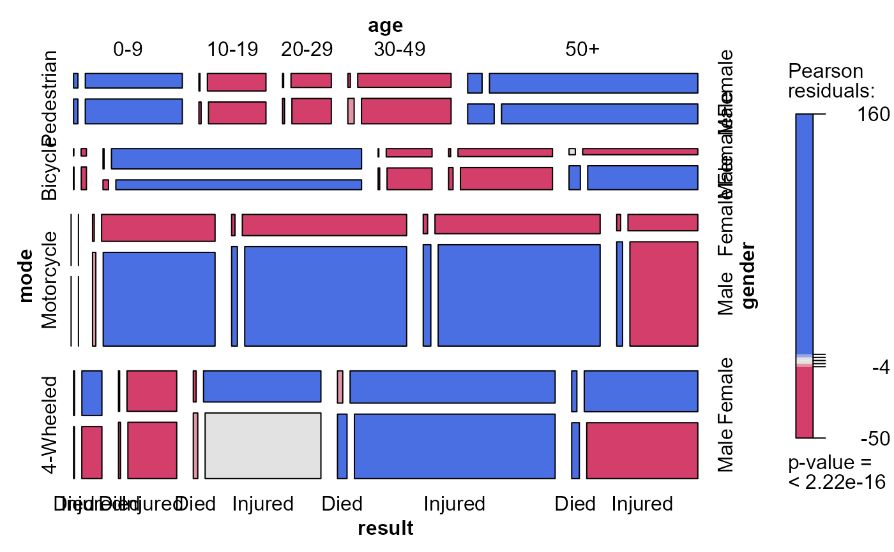
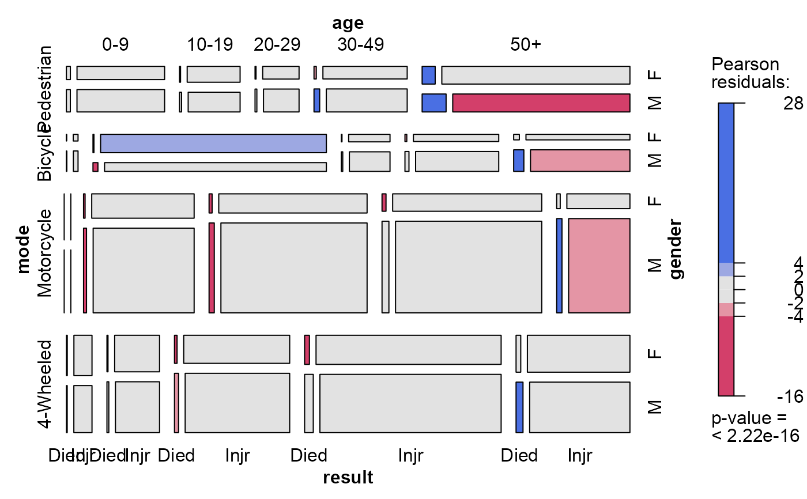
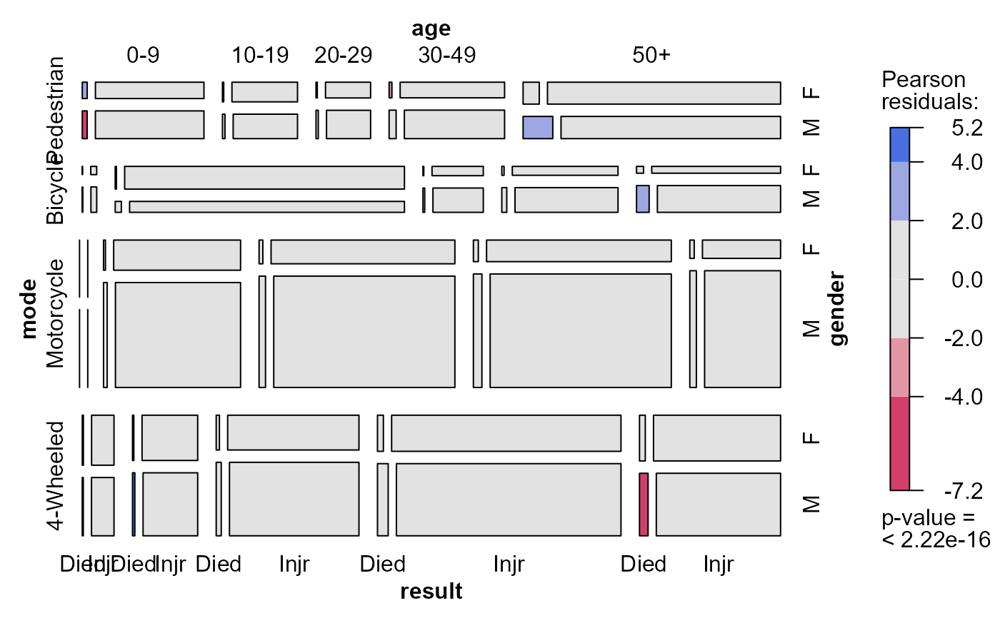

Traffic Accident Victims in France in 1958
Accident.RdBertin (1983) used these data to illustrate the cross-classification of data by numerous variables, each of which could have various types and could be assigned to various visual attributes.
For modeling and visualization purposes, the data can be treated as a
4-way table using loglinear models and mosaic displays, or as a
frequency-weighted data frame using a binomial response for
result ("Died" vs. "Injured") and plots of
predicted probabilities.
Usage
data(Accident)Format
A data frame in frequency form (comprising a 5 x 2 x 4 x 2 table) with 80 observations on the following 5 variables.
agean ordered factor with levels
0-9<10-19<20-29<30-49<50+resulta factor with levels
DiedInjuredmodemode of transportation, a factor with levels
4-WheeledBicycleMotorcyclePedestriangendera factor with levels
FemaleMaleFreqa numeric vector
Details
age is an ordered factor, but arguably, mode should be treated as ordered, with levels
Pedestrian < Bicycle < Motorcycle < 4-Wheeled
as Bertin does. This affects the parameterization in models, so we don't do this directly in the
data frame.
Examples
# examples
data(Accident)
head(Accident)
#> age result mode gender Freq
#> 1 50+ Died Pedestrian Male 704
#> 2 50+ Died Pedestrian Female 378
#> 3 50+ Died Bicycle Male 396
#> 4 50+ Died Bicycle Female 56
#> 5 50+ Died Motorcycle Male 742
#> 6 50+ Died Motorcycle Female 78
# for graphs, reorder mode
Accident$mode <- ordered(Accident$mode,
levels=levels(Accident$mode)[c(4,2,3,1)])
# Bertin's table
accident_tab <- xtabs(Freq ~ gender + mode + age + result, data=Accident)
structable(mode + gender ~ age + result, data=accident_tab)
#> mode Pedestrian Bicycle Motorcycle 4-Wheeled
#> gender Female Male Female Male Female Male Female Male
#> age result
#> 0-9 Died 89 150 5 26 6 6 65 70
#> Injured 1967 3341 126 378 131 181 1362 1593
#> 10-19 Died 28 70 31 76 54 362 61 150
#> Injured 1495 1827 7218 3407 3587 12311 2593 3543
#> 20-29 Died 24 78 10 55 82 660 107 353
#> Injured 864 1521 609 1565 4010 18558 4361 9084
#> 30-49 Died 49 223 24 146 98 889 199 720
#> Injured 1814 3178 1118 3024 3664 18909 7712 15086
#> 50+ Died 378 704 56 396 78 742 253 513
#> Injured 5449 5206 1030 3863 1387 8597 5552 7423
## Loglinear models
## ----------------
# mutual independence
acc.mod0 <- glm(Freq ~ age + result + mode + gender,
data=Accident,
family=poisson)
LRstats(acc.mod0)
#> Likelihood summary table:
#> AIC BIC LR Chisq Df Pr(>Chisq)
#> acc.mod0 60983 61007 60320 70 < 2.2e-16 ***
#> ---
#> Signif. codes: 0 '***' 0.001 '**' 0.01 '*' 0.05 '.' 0.1 ' ' 1
mosaic(acc.mod0, ~mode + age + gender + result)

# result as a response
acc.mod1 <- glm(Freq ~ age*mode*gender + result,
data=Accident,
family=poisson)
LRstats(acc.mod1)
#> Likelihood summary table:
#> AIC BIC LR Chisq Df Pr(>Chisq)
#> acc.mod1 2942.4 3040.1 2217.7 39 < 2.2e-16 ***
#> ---
#> Signif. codes: 0 '***' 0.001 '**' 0.01 '*' 0.05 '.' 0.1 ' ' 1
mosaic(acc.mod1, ~mode + age + gender + result,
labeling_args = list(abbreviate = c(gender=1, result=4)))

# allow two-way association of result with each explanatory variable
acc.mod2 <- glm(Freq ~ age*mode*gender + result*(age+mode+gender),
data=Accident,
family=poisson)
LRstats(acc.mod2)
#> Likelihood summary table:
#> AIC BIC LR Chisq Df Pr(>Chisq)
#> acc.mod2 968.13 1084.8 227.47 31 < 2.2e-16 ***
#> ---
#> Signif. codes: 0 '***' 0.001 '**' 0.01 '*' 0.05 '.' 0.1 ' ' 1
mosaic(acc.mod2, ~mode + age + gender + result,
labeling_args = list(abbreviate = c(gender=1, result=4)))

acc.mods <- glmlist(acc.mod0, acc.mod1, acc.mod2)
LRstats(acc.mods)
#> Likelihood summary table:
#> AIC BIC LR Chisq Df Pr(>Chisq)
#> acc.mod0 60983 61007 60320 70 < 2.2e-16 ***
#> acc.mod1 2942 3040 2218 39 < 2.2e-16 ***
#> acc.mod2 968 1085 227 31 < 2.2e-16 ***
#> ---
#> Signif. codes: 0 '***' 0.001 '**' 0.01 '*' 0.05 '.' 0.1 ' ' 1
## Binomial (logistic regression) models for result
## ------------------------------------------------
library(car) # for Anova()
#> Loading required package: carData
#>
#> Attaching package: 'carData'
#> The following object is masked from 'package:vcdExtra':
#>
#> Burt
acc.bin1 <- glm(result=='Died' ~ age + mode + gender,
weights=Freq, data=Accident, family=binomial)
Anova(acc.bin1)
#> Analysis of Deviance Table (Type II tests)
#>
#> Response: result == "Died"
#> LR Chisq Df Pr(>Chisq)
#> age 1179.03 4 < 2.2e-16 ***
#> mode 136.82 3 < 2.2e-16 ***
#> gender 467.70 1 < 2.2e-16 ***
#> ---
#> Signif. codes: 0 '***' 0.001 '**' 0.01 '*' 0.05 '.' 0.1 ' ' 1
acc.bin2 <- glm(result=='Died' ~ (age + mode + gender)^2,
weights=Freq, data=Accident, family=binomial)
Anova(acc.bin2)
#> Analysis of Deviance Table (Type II tests)
#>
#> Response: result == "Died"
#> LR Chisq Df Pr(>Chisq)
#> age 1100.82 4 < 2.2e-16 ***
#> mode 136.07 3 < 2.2e-16 ***
#> gender 418.88 1 < 2.2e-16 ***
#> age:mode 122.24 12 < 2.2e-16 ***
#> age:gender 46.86 4 1.631e-09 ***
#> mode:gender 21.94 3 6.702e-05 ***
#> ---
#> Signif. codes: 0 '***' 0.001 '**' 0.01 '*' 0.05 '.' 0.1 ' ' 1
acc.bin3 <- glm(result=='Died' ~ (age + mode + gender)^3,
weights=Freq, data=Accident, family=binomial)
Anova(acc.bin3)
#> Analysis of Deviance Table (Type II tests)
#>
#> Response: result == "Died"
#> LR Chisq Df Pr(>Chisq)
#> age 1100.82 4 < 2.2e-16 ***
#> mode 136.07 3 < 2.2e-16 ***
#> gender 418.88 1 < 2.2e-16 ***
#> age:mode 122.24 12 < 2.2e-16 ***
#> age:gender 46.86 4 1.631e-09 ***
#> mode:gender 21.94 3 6.702e-05 ***
#> age:mode:gender 13.02 12 0.3675
#> ---
#> Signif. codes: 0 '***' 0.001 '**' 0.01 '*' 0.05 '.' 0.1 ' ' 1
# compare models
anova(acc.bin1, acc.bin2, acc.bin3, test="Chisq")
#> Analysis of Deviance Table
#>
#> Model 1: result == "Died" ~ age + mode + gender
#> Model 2: result == "Died" ~ (age + mode + gender)^2
#> Model 3: result == "Died" ~ (age + mode + gender)^3
#> Resid. Df Resid. Dev Df Deviance Pr(>Chi)
#> 1 71 64599
#> 2 52 64384 19 214.445 <2e-16 ***
#> 3 40 64371 12 13.022 0.3675
#> ---
#> Signif. codes: 0 '***' 0.001 '**' 0.01 '*' 0.05 '.' 0.1 ' ' 1
# visualize probability of death with effect plots
if (FALSE) { # \dontrun{
library(effects)
plot(allEffects(acc.bin1), ylab='Pr (Died)')
plot(allEffects(acc.bin2), ylab='Pr (Died)')
} # }
#